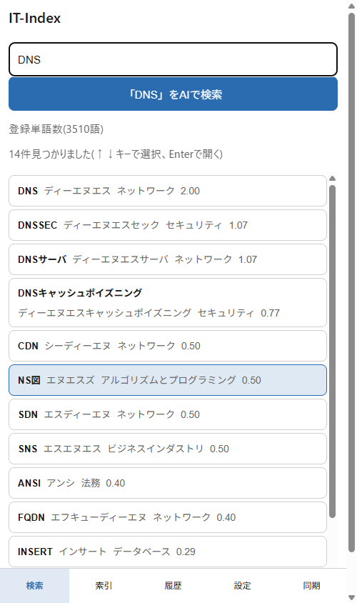
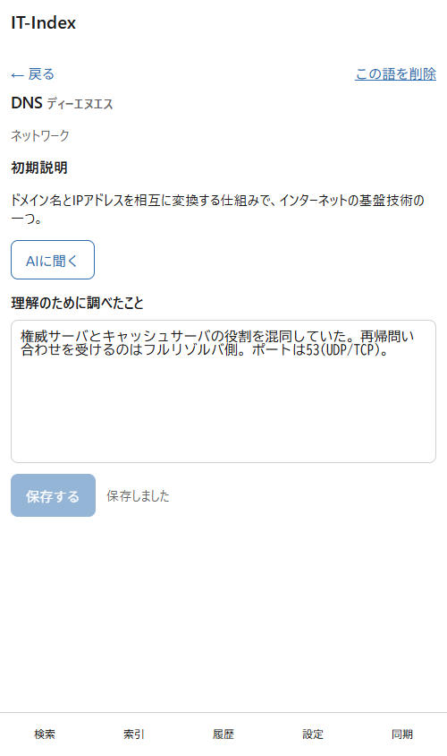
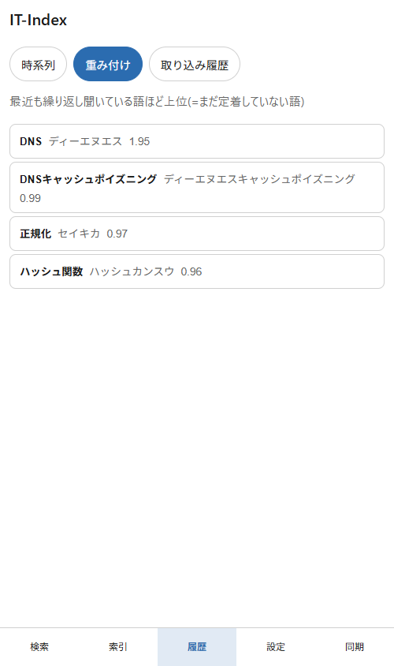
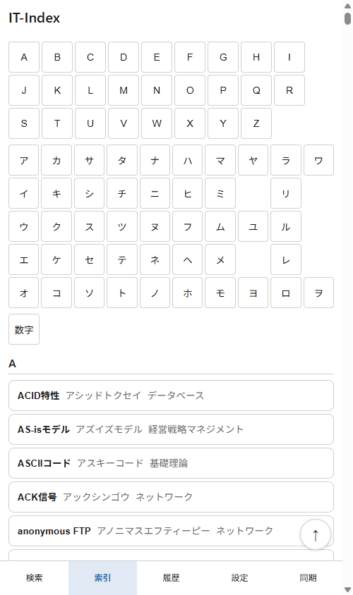

「DNS」でも「でぃーえぬえす」でも、思いついた読みでそのまま検索。 わからなければその場でAIに質問して、得られた補足はあなたの辞書に蓄積。 IT用語 3,510語(IPAシラバスをもとにした24分類)を収録した、個人用のIT用語辞書アプリです。

検索して終わりの辞書ではなく、使うほど自分に合っていく辞書を目指しました。
かな・カタカナ・英字のどれで入力しても、その場で候補が絞り込まれます。「はっしゅ」と打てばハッシュ関数もハッシュ値も一覧に。読みがうろ覚えでも目的の用語にたどり着けます。
各用語の要点説明はそのままに、AIチャットで得た補足や自分で調べたことが別枠に積み上がります。引いて、聞いて、書き足して——使い込むほど自分専用の辞書になります。
履歴の「重み付け」ビューは、最近も繰り返し引いている語=まだ定着していない語を上位に表示。次に復習すべき用語がひと目でわかります。
用語・ノート・履歴はすべて端末内に保存されるローカルファースト設計。検索・索引・履歴・ノートはアカウント登録なしで使い始められます。AIチャットだけは無料のアカウント登録が必要で、質問は公式サーバー経由でAI事業者へ送られます(サーバーには保存しません)。
「IT用語を調べる回数が多い人」ほど、蓄積の効果が大きくなります。
基本情報・応用情報などの学習に。IPAシラバスをもとにした24分類で整理した3,510語を収録しているので、過去問で出会った用語をその場で引き、重み付けで苦手分野を重点復習できます。
会議やドキュメントで飛び交う略語を、読み方があいまいなままでも即検索。わからなければAIに聞いて補足を残し、「次は同じ用語で困らない」自分の辞書を作れます。
検索した履歴と書き残したノートが、そのまま学習記録になります。単語帳を別に作る手間はいりません。ライト/ダークテーマ対応で、通勤中のスマホでも夜の学習でも。
辞書を引く延長の操作だけで、復習のサイクルまで回ります。
思いついた読みで入力すると候補が即座に並びます。五十音・A〜Zの索引からたどることもできます。
用語の画面から「AIに聞く」でそのまま質問。納得できた説明は補足としてあなたの辞書に取り込めます。
繰り返し引いている語は履歴の上位に浮かび上がります。定着していない用語から順に見直せます。
実際のアプリ画面です。スマホは下部タブで片手操作、PCでも同じ画面をそのまま使えます。



PCはインストール不要。Androidはアプリとして持ち歩けます。
現在は開発版(デバッグ署名)のため、インストール時に警告が表示されることがあります。自動更新には対応していないので、新しい版はリリースページから入手してください。
APKをダウンロードはじめる前に気になりそうなことをまとめました。
無料で始められます。検索・索引・履歴・ノートなどの辞書機能はすべて無料です。AIチャットも、無料のアカウント登録と自分のAPIキー(BYOK)の設定だけで使えます(AIの利用料は各AI事業者への従量課金になります)。
IT-Index プレミアム(月額 ¥300・毎月自動更新)にすると、次の2つが使えるようになります。
解約はいつでもアプリの設定画面から行え、即時に反映されます。
用語・ノート・履歴はすべてお使いの端末内(ブラウザのIndexedDB)に保存されます。端末間同期を自分で有効にしない限り、これらが外部サーバーへ預けられることはありません。ただしAIチャットは公式サーバーを経由してAI事業者へ問い合わせる仕組みのため、送信した質問文と対象の用語はサーバーを通ります(サーバー側に保存するのは利用回数のみで、質問文は保存しません)。
無料のアカウント登録(メールアドレスとパスワード)とログインが必要です。その上で設定画面に自分のAPIキーを登録すると使えるようになります。プロバイダ(OpenAI / Anthropic)とモデルを選択でき、登録時の接続テストに通ったキーだけが保存されます(実動作を確認できているのはOpenAIのみです)。APIキーなしでAIを使いたい場合は、プレミアム(月額 ¥300)をご利用ください。ログインやAPIキーがなくても、検索・索引・履歴・ノートなど辞書としての機能はすべて使えます。
公式サーバーはCloudflare Workers + D1で運用しています(このページも同じサーバーの https://it-index.doryu.workers.dev/lp/ から配信しています)。アカウント・端末間同期の中継・AIの中継・ライセンス管理を、このサーバーが担います。Cloudflareの無料枠の範囲で運用しているため稼働保証(SLA)はなく、枠を超えた場合や障害時は一時的に利用できないことがあります。辞書機能は端末内で完結するため、サーバーが止まっていても検索・索引・履歴・ノートはそのまま使えます。
できます。サーバーの実装はGitHubで公開しており、セルフホストの手順に従って自分のCloudflareアカウントに同じサーバーを立てられます。アプリの設定「接続先サーバー」にそのURLを入れると接続先が切り替わり、端末間同期とAIの中継がライセンス不要で使えます(運用と費用はご自身の負担になります)。
専用アプリは現在Android版のみです。動作確認はPCのChrome / EdgeとAndroidアプリを中心に行っています。
アプリストアを経由しない直接配布(APK)のため、Androidが標準で表示する警告です。インストールには「提供元不明のアプリ」の許可が必要になります。配布元はこのページ下部のGitHubリポジトリで公開しています。